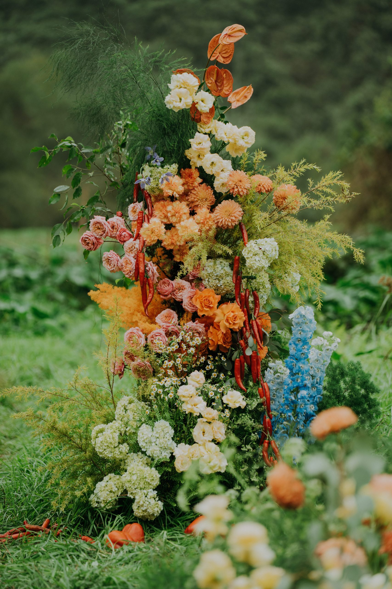
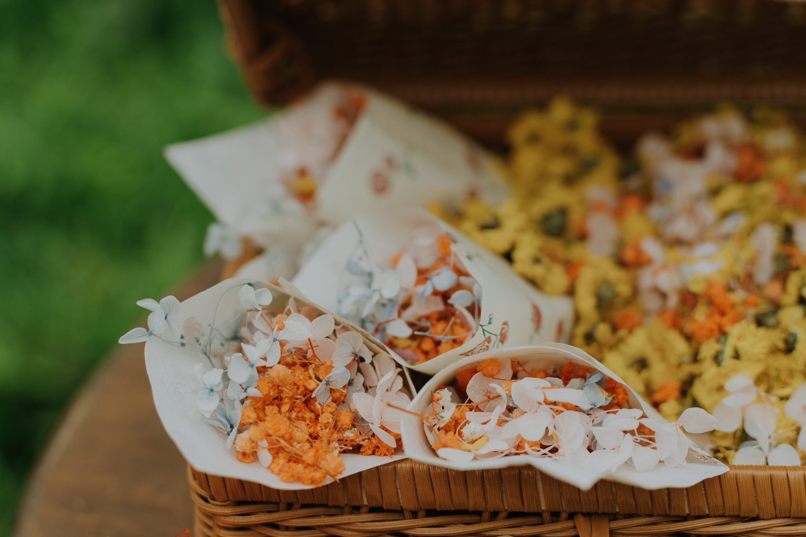

Bridal styling
Guidance on wedding dress, bridesmaid attire, make-up and accessories, with the bride at the centre.

Full planning, styling and decoration brought together as a complete expression of atmosphere, the people at its centre and the story only they can tell.

Premium Wedding is WIS’s fullest way of working: every part of a detailed wedding plan and its decoration held together by one experienced planner team, stylists and trusted vendors.
“The bride is the star of the show. She shines brighter than any diamond.”
Premium is not a set of decorative add-ons. It connects the personal, visual and practical parts of a wedding so the atmosphere feels considered from first arrival to final goodbye.

Guidance on wedding dress, bridesmaid attire, make-up and accessories, with the bride at the centre.
A unique aesthetic shaped around personal style, atmosphere and the story the celebration tells.
Planning, design and production considered as one continuous experience rather than separate tasks.

The touching and sophisticated atmosphere of a wedding is born from the unity of its elements. WIS considers how the celebration is seen, heard, touched, tasted and remembered — while keeping the experience natural for the people inside it.
For a different scale, setting or starting point, explore the other active ways WIS can work with you.
Bring us your story, the place and the parts of the celebration you care about most. We will begin by finding the visual and emotional direction that is yours.
Begin the conversation